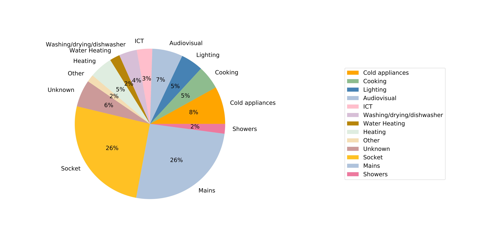

Machine Learning
Energy reduction attracts the growing attention of people in recent years due to the energy crisis and global warming. Energy disaggregation is an efficient method to reduce energy consumption since it can provide appliance specific data from the total electricity consumption to guide people to manage their electricity usage. Besides, non-intrusive load monitoring is more efficient and cheap methods to get appliance specific data than the traditional intrusive load monitoring. This project applies the MLR(multiple logistic regression) model and neural networks to the energy disaggregation tasks. To improve the prediction ability of the model, the demographic information, the house information, the appliance information and the weather information are added into our input features. We train the model on the Household Electricity Survey dataset, and evaluate our models by Root Mean Square Error and Mean Absolute Error. The results will be compared to two baseline models, and final results show multiple logistic regression model and neural networks can improve the disaggregation results compared to two baseline models.
Energy disaggregation is to separate the total energy consumption into the consumption of each appliance in a household. It is helpful to give people the instruction to adjust their electricity-using habits, and so it is also an efficient method of energy reduction. In this project, we based on the daily electricity consumption data rather than the minute-level data, because providing the daily report of electricity consumption can give people the general direction to manage their electricity usage.
We use the HES dataset to train our models. The HES dataset provides demographic information, the house information, the appliance information, the weather information and the total electricity consumption.
For data preprocessing, we applied the standardization to the data to help the model converge more quickly. The categorical data is transformed into the one-hot encoding, and the appliance information is represented as a fixed-size vector whose dimension is the number of appliances in the corresponding appliance type. To deal with the missing data, we replace the missing data with the average and mode of the feature, and the missing indicator method is used to help model distinguish which value is the missing value.
The MLR model and neural networks are chosen as our models to solve energy disaggregation tasks. The cross-entropy loss is chosen as our loss function. We use the RMSE and MAE to evaluate the performance of models on the testing set. The MLR model and neural networks perform better than the average baseline model and the constant-MLR model on RMSE and MAE, and the neural networks have the best performance among 4 models. From experimental results, we can know the weather information and the demographic information have a bigger effect on the prediction results.